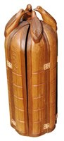
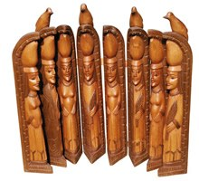
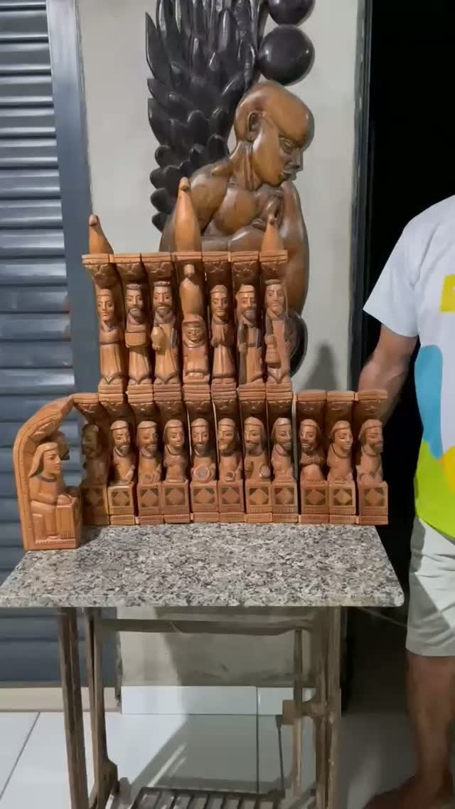
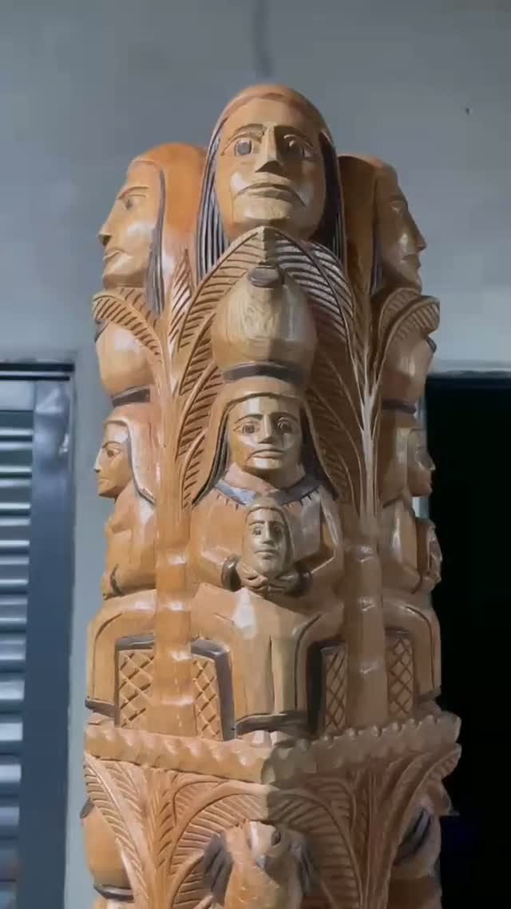
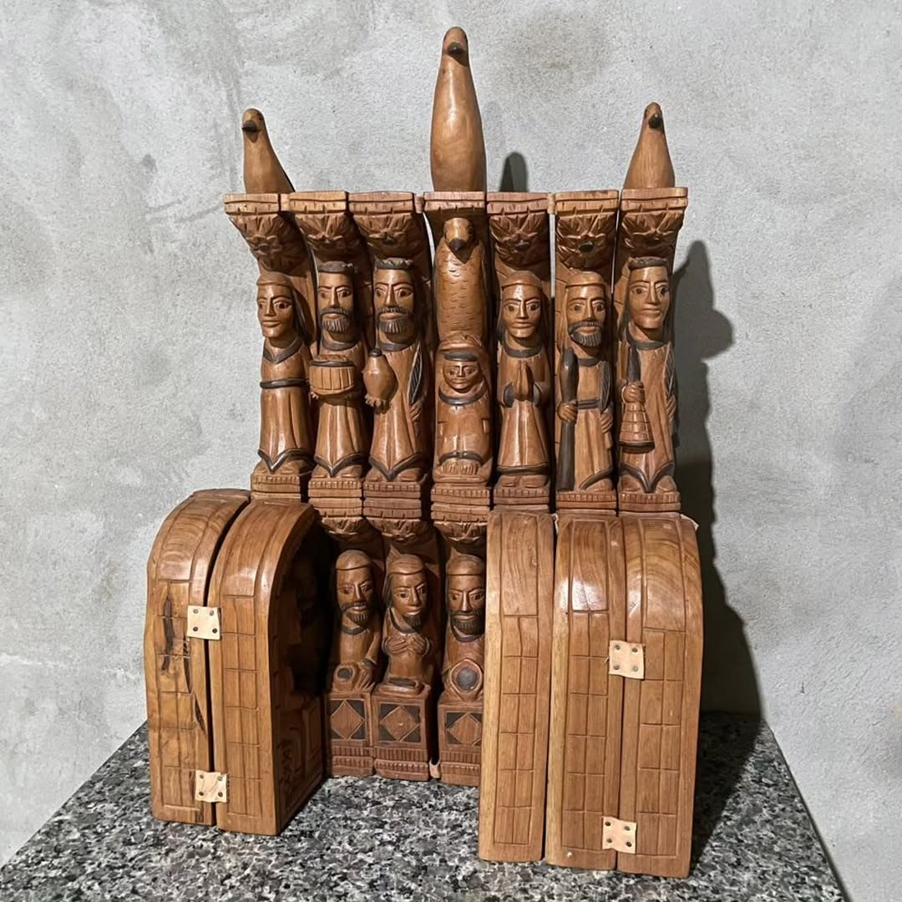
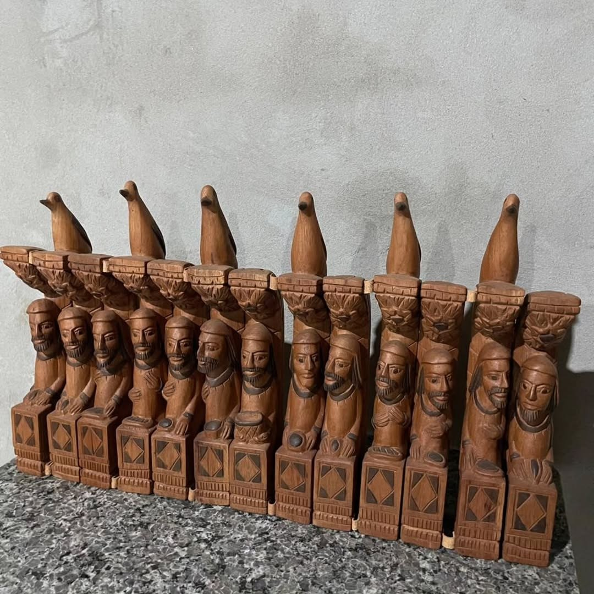

Paquinha
Múltiplos em madeira: pequenas arquiteturas narrativas do entalhe piauiense.
Marcos Fernando Rodrigues da Silva, Mestre Paquinha, é escultor autodidata de Teresina associado aos “múltiplos esculturais”: peças em madeira que se encaixam, se abrem e revelam figuras, fé e narrativas regionais.
Marcos Fernando Rodrigues da Silva, o Paquinha, nasceu em Teresina, Piauí, em 18 de janeiro de 1957. Ele considera seu primeiro trabalho uma peça de estilo primitivo: um nordestino tirando água de um poço, feito para uma feira local.
O reconhecimento desse primeiro entalhe levou Mestre Cornélio a convidá-lo para trabalhar como ajudante. Depois de alguns meses, Paquinha seguiu por conta própria e, em pouco tempo, passou a ser conhecido pelo nome artístico que hoje acompanha suas peças.
Sua marca está nos “múltiplos” ou “múltiplos esculturais”: obras em madeira que se abrem, encaixam ou se dissociam, revelando figuras. O artista rejeita a leitura de que sejam apenas oratórios; prefere afirmar nelas uma linguagem própria, ligada a temas regionais e à surpresa do entalhe que se desdobra.
Em 1983, Paquinha recebeu o primeiro prêmio no IV Salão de Arte Santeira, promovido pela Universidade Federal do Piauí, reforçando sua posição entre os entalhadores piauienses.
A madeira se abre em camadas e revela seus personagens.
Para observar na peça
- Peças que se abrem ou se encaixam
- Entalhe minucioso em madeira
- Temas regionais e religiosos
- Diferença entre oratório e múltiplo escultural
Materiais e técnica
Galeria de referências de estilo
Imagens públicas reunidas para reconhecer linguagem, materiais e técnica. As peças da exposição são vistas apenas ao vivo.






Fontes e créditos
- Arte do Brasil — Mestre Paquinha http://www.artedobrasil.com.br/marcos_fernando.html
- Escritório de Arte — Mestre Paquinha https://www.escritoriodearte.com/artista/mestre-paquinha
- OAB — perfil de mestres artesãos em madeira do Piauí https://www.oab.org.br/noticias/rss-item/29031
- Identificação informada pela equipe/etiqueta da exposição Métis
- Referência de acervo da equipe — OCR e conferência visual